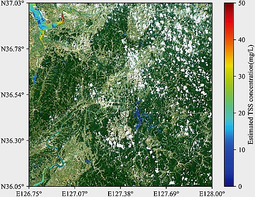

This report combines the current values and recommendations represented by the repository HTML pages. Field records are read from this browser's local storage; dashboard, climate, and water values are kept in sync with their page definitions.

Satellite raster viewThe climate page models the Nile Delta using WeatherNext2-compatible forecasts and local historical-trend fallback data. Run a fresh analysis on Climate for an updated ensemble.
The water page provides surface-water, groundwater, and irrigation calculations for the Nile Delta. Run analysis on Water to refresh its live simulation state.
| Season | Crop | Role | Water | Nitrogen |
|---|